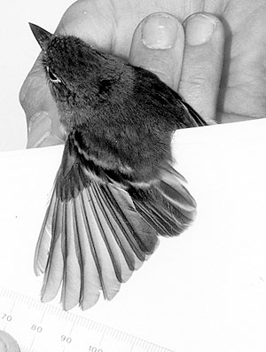

|  |
|
Figure 6. Yellow-bellied Flycatcher, Empidonax flaviventris (1996-124), banded and released at San Nicolas Island, 28 September 1996, the first for Ventura Co. Note the lack of emargination on primary 6, distinguishing this species from the Western Flycatcher (E. difficilis sensu lato, which normally has an emerginated sixth primary. Photo by Walter Wehtje |